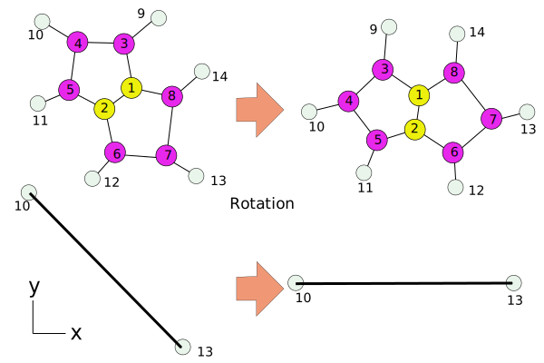

5
CT1001789336
H 0.00210 -0.00410 0.00200
C -0.01270 1.08580 0.00800
H 1.00990 1.46310 0.00030
H -0.53990 1.44690 -0.87510
H -0.52290 1.43730 0.90480
sudo apt install python3
sudo -H python3 -m pip install jupyter
sudo -H python3 -m pip install numpy
python3 -m notebook --no-browser
import numpy
atom = []
pos = []
nline = 0
with open("methane.xyz", "r") as f:
lines = f.readlines()
for line in lines:
if nline > 1:
atom.append(line.split()[0])
pos.append(line.split()[1:4])
nline += 1
pos = numpy.array(pos, dtype=numpy.float_)
print(atom)
print(pos)
dv = pos[3, :] - pos[0, :]
prod = numpy.dot(pos[3, :], pos[0, :])
norm = numpy.sqrt(numpy.dot(dv, dv))
z180 = numpy.array([[-1, 0, 0],
[0, -1, 0],
[0, 0, 1]], dtype=numpy.float_)
numpy.dot(pos, z180)
with open("temp.xyz", mode="w") as f:
print(len(atom), file=f)
print("rotated", file=f)
for i in range(len(atom)):
print(atom[i], pos[i,0], pos[i,1], pos[i,2], file=f)